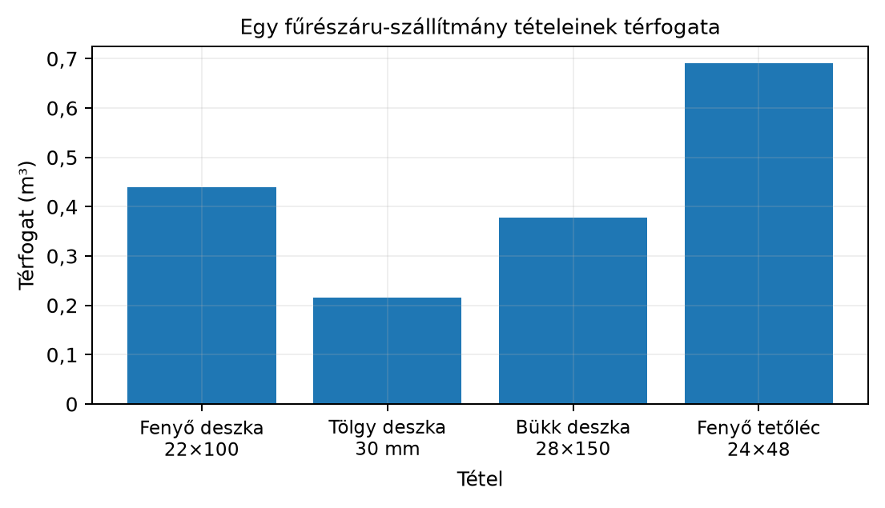

Képzeld el, hogy a műhelybe 200 folyóméter fenyő deszka érkezik, mellette 12 db szélezetlen tölgy deszka. A szállítólevélen az áll: „A/B osztály, 22×100 mm, fenyő, 50 db, 4,0 m”. Az asztalos mester azt mondja: vetted át, válogasd szét, mi mehet látható ajtókeretnek, mi mehet takart belső szerkezetnek, és töltsd ki a konszignációs lapot. Ha rosszul válogatsz, a legszebb deszkát elrejted, a göcsöset meg a vendég elé teszed; ha rosszul köbözöl, a műhely anyagot veszít vagy feleslegesen fizet. Ezért kell pontosan ismerned a fűrészáru fajtáit, méreteit, osztályozását és a köbözést.
Definíció. A fűrészáru a rönk fűrészelésével keletkező, főleg hasáb vagy hasábszerű, rendszerint további megmunkálásra szánt faanyag. A gyakorlatban fűrészelt, még nem kész méretre gyalult termék.
A fűrészárut a keresztmetszet és a megmunkáltság szerint csoportosítjuk.
A fűrészáru méretmegadása mindig a következő sorrendben történik:
ahol a hossz, a szélesség, a vastagság. A rajzokon és a szabásjegyzékekben a méretet mm-ben írjuk, a hosszúságot gyakran méterben adjuk meg. A fűrészüzemi ajánlatban, szállítólevélen a hossz lehet fm (folyóméter) is. Például „4000×100×22 mm” jelentése: 4,0 m hosszú, 100 mm széles, 22 mm vastag deszka. A sorrendet mindig így használjuk: hossz × szélesség × vastagság.
Definíció. A szélezett fűrészáru két széle (keskeny oldala) hosszában végig párhuzamosan le van vágva, ezért a szélessége a hossz mentén állandó. A szélezetlen fűrészáru széleit nem vágják párhuzamosra; a kéreg rajta marad vagy a szél a fa természetes alakját követi, ezért a szélesség változó. A félszélezett darab egyik széle vágott, a másik természetes.
A gyakorlatban a kemény lombos anyagot (tölgy, bükk) gyakran szélezetlenül vásárolják, mert a szélezéskor sok értékes anyag hulladékká válna; a szélezetlen deszkából a műhelyben magunk szélezünk, vagy a szélesítő toldáshoz használjuk fel a teljes felületet. A fenyő deszkát viszont gyakran szélezve hozzák.
Definíció. A bütü rendbe vágása (bütüzés) a darab két végének merőleges, tiszta méretre vágása. A bütű a deszka vagy palló véglapja. A bütüzés eltávolítja a szálkás, töredezett, repedt végeket, megadja a pontos hosszt, és csökkenti annak kockázatát, hogy a végek egyenetlenül száradnak és továbbrepedeznek. A szélezés a szélezetlen deszka széleinek párhuzamos levágása szélezett áruvá.
A fűrészáru-kereskedelemben három méretfogalmat kell megkülönböztetnünk.
Megjegyzés. A fa a szárítás során zsugorodik, ezért a fűrészelési (zöld) méretnek nagyobbnak kell lennie, mint a kívánt szárazméretnek. Ezt a méretnövekményt ráhagyásnak nevezzük. A ráhagyás fedezi a zsugorodást és a későbbi gyalulási, szélezési veszteséget is. Például ha 45 mm vastag, gyalult pallót akarunk készíteni, a fűrészüzemben nedves állapotban kb. 52–54 mm vastagra fűrészelhetik, szárítás után kb. 50 mm marad, majd gyalulással kapjuk a 45 mm-es kész méretet (tájékoztató, ellenőrizendő: a pontos ráhagyás fafaj, fűrészelés, szárítás és szabvány szerint).
A méretmegadásnál mindig tisztázzuk, hogy a megadott érték fűrészelt vagy gyalult, száraz vagy fűrészelési méret. Ez azért fontos, mert a rossz méretrendelésnél a gyalult alkatrész nem jön ki a fűrészelt anyagból.
A fűrészárut nem elég fafaj és méret szerint válogatni; minőségi osztályba is kell sorolni, mert ugyanazon fafajú, méretű deszka egyik darabja lehet bútorfelület, a másik csak lécváz vagy zsaluzó anyag.
Szabvány. A fűrészáru minőségi osztályozását termékszabványok írják le. A hazai és európai gyakorlatban a fűrészáru megjelenés szerinti osztályozására használnak szabványokat (fenyők: MSZ EN 1611-1; lombosak, például tölgy és bükk: MSZ EN 975 sorozat; a méreteltérésekre és előnyös méretekre az MSZ EN 1313 sorozat vonatkozik (ellenőrizendő: a pontos szám és a hatályos kiadás); a régi magyar gyakorlatban az MSZ 17300 sorozat szerepelt). A hatályos termékszabvány pontos számát, osztályjelölését és hibatűréseit a megrendeléskor ellenőrizni kell; e könyvben az osztályozás elvét tanítjuk, nem az összes határértéket.
A minőségi osztályozás elve a hibák megengedett mértéke. Az osztályozásnál vizsgáljuk a fafajt, a nedvességtartalmat, az alaki hibákat (görbeség, csavarodás, keresztmetszeti torzulás), a szövetszerkezeti és sérülési hibákat (göcs, repedés, korhadás, színeződés, rovarkár, kéreg, fűrészelési hiba). A hibák értékelésénél nemcsak a hiba mérete, hanem annak helye is számít. Például az asztalosáru elülső oldalán a szép, egész felületű, legfeljebb kisméretű egészséges göcsöt engedik meg; a hátsó oldalon több hiba is lehet.
A gyakorlatban az osztályokat betűkkel vagy számokkal jelölik, például A, B, C, D vagy I–IV. osztály. A jelölés rendeltetésre is utalhat: asztalosáru, építőáru, szerkezeti áru. Az A vagy I. osztály általában a legszebb, legkevesebb hibájú anyag; a D vagy IV. osztály a szerényebb, takart vagy durvább célú anyag. A pontos osztályneveket és a hibatűréseket a vonatkozó termékszabvány adja meg (ellenőrizendő).
A minőségi osztályozás célja, hogy a fűrészárut a felhasználásának megfelelően, a lehető legjobb kihozatallal használjuk fel. A szebb, drágább anyagot látható felületre, a gyengébbet szerkezeti, takart helyre, a leghitványabbat kisegítő, ideiglenes célra.
A fűrészáru-átvételnél a szállítmányt ellenőrizni kell, mert a szállítólevél és a valóság eltérhet. A válogatáskor a darabokat a minőségi osztály és a felhasználás szerint csoportokba rakjuk.
Recept. Fűrészáru átvétele és válogatása lépésenként:
A fűrészárut térfogatban, köbméterben (m³) szokás vásárolni, ezért a mennyiség meghatározását köbözésnek nevezzük.
Összefüggés. Szélezett fűrészáru térfogata:
ahol a hossz, a szélesség, a vastagság, mindegyik méterben kifejezve, pedig m³-ben. Ha a méretek mm-ben adottak, először méterré kell váltani: .
A folyóméter-alapú gyakorlatban a térfogat keresztmetszeti területből is számítható:
ahol a folyóméter-ben megadott hossz, a keresztmetszeti terület m²-ben. Ez akkor hasznos, ha sok egyenlő keresztmetszetű darabot számolunk.
A szélezetlen deszka szélessége a hossz mentén változó, ezért nem mérhetünk egyetlen teljes szélességet. Ilyenkor a középszélesség módszerét használjuk.
Szabály. Szélezetlen fűrészáru köbözéséhez mérd meg a deszka szélességét több ponton – például a hossz negyedénél, felénél és háromnegyedénél –, számold ki az átlagot, és ezzel az átlagos (középső) szélességgel szorozd be a vastagságot és a hosszt:
ahol a mért szélességek átlaga méterben.
A kéreg vastagságát és a szélezetlenségből adódó szabálytalan részt nem számítjuk hasznos szélességnek, ezért a méréseket a hasznosítható, kéreg nélküli felületre kell venni. A pontos mérési helyeket és kerekítési szabályokat a szállítási szerződés vagy a vonatkozó termékszabvány rögzíti (ellenőrizendő).
A HTML-változat mini-kalkulátor: a három szélességből, a hosszból, a vastagságból és a darabszámból kiszámolja a középszélességet és a térfogatot.
Számítás. 1. példa: szélezett fenyő deszka köbözése.
Adott: 50 db szélezett fenyő deszka, mindegyik , , .
Keresett: a tétel térfogata (m³).
Képlet: .
Behelyettesítés:
A teljes tétel:
Ellenőrzés folyóméterrel: 50 db × 4,0 m = 200 fm; keresztmetszet ; . A két úton ugyanaz jött ki. ∎
Számítás. 2. példa: szélezetlen tölgy deszka köbözése középszélességgel.
Adott: 12 db szélezetlen tölgy deszka, , . A szélességet minden darabnál három helyen mértük. Az egyik darabon a mért szélességek:
Keresett: a 12 db tétel térfogata.
Kiszámoljuk a középszélességet:
Egy darab térfogata:
A teljes tétel:
Ellenőrzés becsléssel: ha a legnagyobb szélességgel (260 mm) számolnánk, , a 12 db pedig lenne. A középszélességgel számolt érték kisebb, mert a szél valóban keskenyebb; ezért a középszélesség módszere adja a hasznos térfogatot. ∎
Számítás. 3. példa: hibát keresünk egy tétel köbözésében.
Adott: egy 2500 mm hosszú, 28 mm vastag szélezetlen deszka szélességét csak a legszélesebb ponton mérték: 250 mm. A köbözésük: .
Mi a hiba? A legnagyobb szélesség nem adja meg a deszka valós, hasznos térfogatát. Ha a szélesség másutt 210 mm, az átlag 230 mm, akkor a helyes köbözés . A hiba miatt a vevő kb. 8,7%-kal () többet fizetne, és az anyagnorma is hibás lenne. Ezért szélezetlen anyagot mindig középszélességgel, több mérésből átlagolunk. ∎
A fenti példák megmutatják, hogy a köbözést mindig mértékegység-ellenőrzéssel kell végezni: a hossz, szélesség és vastagság méterben legyen, az eredmény m³-ben.
A konszignáció (konszignációs lap) a fűrészáru-szállítmány tételes jegyzéke. Tartalmazza a tételt, a fafajt, a minőségi osztályt, a keresztmetszetet, a darabszámot, a hosszt, a térfogatot és a megjegyzést. Ez a dokumentum az átvétel és az anyagelszámolás alapja.
Példa. Töltsünk ki egy egyszerű konszignációs lapot.
A műhely a következő faanyagot kapta:
Kiszámoljuk a térfogatokat, és konszignációs lap formájában összegezzük őket.
| Tétel | Fafaj | Osztály | Méret (mm) vagy v (mm) | Db | Hossz (m) | Térfogat (m³) | Megjegyzés |
|---|---|---|---|---|---|---|---|
| 1 | fenyő | A/B | 22×100 szélezett | 50 | 4,0 | 0,4400 | táblás, szellőzve |
| 2 | tölgy | B/C | 30 szélezetlen | 12 | 2,5 | 0,2160 | középszélesség 240 mm |
| 3 | bükk | A | 28×150 szélezett | 30 | 3,0 | 0,3780 | gőzölt bükk |
| 4 | fenyő | C | 24×48 léc | 200 | 3,0 | 0,6912 | építőipari léc |
| Összesen | 1,7252 | kerekítve 1,725 m³ |
A tétel 3 számítása például:
A léc tétel:
Az összesítés után ellenőrizzük, hogy az összeg nagyságrendje reális: négy tétel, mind nagyjából 0,2–0,7 m³, az összeg 1,725 m³, ami elfogadható. A mintaárat itt nem tüntettük fel, mert a konszignáció mennyiségi dokumentum; az árakat az árajánlatban számoljuk (lásd Árajánlat készítése: termelési ár, ÁFA, kiszámlázott ár).

Megjegyzés. A konszignációs lapot célszerű úgy kitölteni, hogy a térfogat számítását külön papíron vagy táblázatkezelővel is megismétled: az F oszlop (térfogat) = B (db) × C (hossz) × D (szélesség) × E (vastagság), a méreteket méterben (a mm-ben rögzített méretet előbb osszuk 1000-rel).
A fűrészárut tárolni kell, amíg fel nem használjuk. A rossz tárolás vetemedést, repedést, penészedést, rovarkárt okozhat. A fűrészáru máglyázása azt jelenti, hogy a darabokat szellőző sorokban, lécekkel elválasztva rakjuk egymásra.
Recept. Szakszerű fűrészáru-máglya készítése:
A lécezés célja, hogy a szárítás közben a sorokban egyenletes légmozgás legyen. Ha a deszkákat közvetlenül egymásra rakjuk, az érintkező felületeken megreked a nedvesség, és penész, elszíneződés jelenik meg.
A szélezetlen és a félszélezett darabot a szabálytalan, kérges szél (sraffozott sáv) különbözteti meg a szélezettől. A HTML-változatban a szélesség és a vastagság csúszkájával kipróbálhatod, mikor nevezünk egy keresztmetszetet deszkának, pallónak, lécnek vagy gerendának (a 7.1.1 tájékoztató határai szerint).
A távolságok a recept tájékoztató tartományai. A HTML-változat a recept kilenc lépése szerint, lépésenként építi fel a máglyát, az utolsó lépésben a rossz lécezés következményét mutatja.
A fűrészáru átvételekor és feldolgozása előtt a következőket ellenőrizzük:
Ha eltérést találunk, a szállítólevélre rá kell vezetni, és értesíteni a beszerzőt vagy a szállítót. A hibás tételt lehetőleg rakjuk külön, és fényképpel dokumentáljuk.
Rossz osztályba válogatás. Tünet: a látható bútorlapra szánt deszkán nagy, kihulló göcs vagy repedés; a takart szerkezetbe szép, drága anyag kerül. Oka: nem ismerik az osztályozási határokat, vagy csak az egyik oldalt nézik. Helyes: a minőségi osztály követelményeit és a felhasználási célt együtt kell vizsgálni, mindkét oldalra és az élekre.
Nedvességet nem mérnek. Tünet: a frissen beérkezett, nedves fűrészárut késztermékbe építik, ami később vetemedik, a kötések szétnyílnak. Oka: azt hiszik, a fűrészáru „már száraz”. Helyes: átvételkor nedvességmérővel mérni, és csak a felhasználási célnak megfelelő nedvességtartalmú anyagot használni.
Szélezetlen áru helytelen köbözése. Tünet: a tétel térfogata nagyobb, mint a hasznos anyag; a műhely túlfizet. Oka: legnagyobb szélességet mérik középszélesség helyett. Helyes: három ponton mérnek, átlagolnak, és kéregmentes szélességet számolunk.
Rossz máglyázás lécek nélkül. Tünet: a deszkák elszíneződnek, penészesek, egyenlőtlenül száradnak, megcsavarodnak. Oka: a sorokat közvetlenül egymásra rakták, nincs szellőzés, alátét sincs. Helyes: alátétek, lécezés, bütüvédelem, fedés, szellőző rés.
Méretkeverés vagy sorrendtévesztés. Tünet: a szállítólevél keresztmetszeti jelölését (vastagság × szélesség, pl. 22×100) sorrendcsere nélkül írják be a szabásjegyzékbe, ahol hossz × szélesség × vastagság (4000 × 100 × 22) a sorrend, és a megrendelésben rossz szélességű anyag érkezik. Oka: nem tartják a hossz × szélesség × vastagság sorrendet. Helyes: a méretmegadásnál mindig a megadott sorrendet használni, és a szöveges jelölésnél hozzátenni, mi a szélesség és mi a vastagság.
Valós eset. Egy kis asztalosműhely bejárati ajtókat gyártott. A beszerző okosnak hitte magát, és szélezetlen tölgy pallót vásárolt, mert olcsóbbnak tűnt. Az átvételnél a gyors kolléga minden pallót a legszélesebb pontján mért, és úgy köbözött. A szállítólevelet gond nélkül elfogadták. Amikor a pallókat szélezni kezdték, kiderült, hogy a valódi, hasznos térfogat körülbelül 12%-kal kisebb, mint amit kifizettek. Ráadásul a nedvességmérést is elmulasztották, ezért a félig szárított anyagból a gyalulás után csavarodott alkatrészek lettek. A hiba miatt a megrendelés csúszott, és az anyagot utólag újra kellett szárítani. A tanulság: a fűrészárut mindig a szabályos módon, középszélességgel köbözzük, és a nedvességet átvételkor ellenőrizzük.
1. feladat (A). Írd be, melyik fűrészáru lehet deszka, palló, léc vagy gerenda: (a) 3000×48×24 mm, (b) 4000×100×100 mm, (c) 3500×180×28 mm, (d) 2500×160×48 mm. Indokold röviden a vastagság és a szélesség arányával.
2. feladat (A). Váltsd át méterré, és számold ki egy db 3200×125×25 mm-es szélezett deszka térfogatát három tizedesjegyre.
3. feladat (B). Egy szélezetlen bükk deszka hossza 2800 mm, vastagsága 35 mm. Mérd a szélességeket: 300 mm, 270 mm, 240 mm, 210 mm (négy mérés). Számold ki a darab térfogatát középszélességgel.
4. feladat (B). Töltsd ki a konszignációs lap hiányzó térfogat sorát: 40 db tölgy deszka, A osztály, 27×130 mm, 2,1 m. Ellenőrizd azt is, hogy az összesítés 0,45 m³-e reális-e a tételre? (Nem kell más tétel; csak az adott tétel térfogatát számold.)
5. feladat (C). Egy tétel 10 db 4,0 m hosszú, 4000 × 100 × 50 mm-es (névleges) pallót tartalmaz. A pallókat 2–2 mm túlmérettel fűrészelték: a tényleges vastagság 52 mm, szélesség 102 mm. Számold ki a fűrészelési (tényleges) és a névleges térfogatot, és állapítsd meg, hány százalékkal nagyobb a fűrészelési térfogat. Ez a ráhagyás. Hol hasznosul ez a későbbi szárításnál és gyalulásnál?
6. feladat (D). Műhelygyakorlat: készíts elő egy 20 db-os szélezett deszkaköteget méretellenőrzéshez. Mérj meg legalább 5 deszkát, mérd a hossz, szélesség és vastagság értékét, számold át az átlagos térfogatot, és tölts ki egy kézi konszignációs lapot a mért adatokkal. A mérési jegyzőkönyvben tüntesd fel: fafaj, osztály, nedvesség (ha van nedvességmérő), hibákat röviden.
Önellenőrzés – válaszok.
1. feladat megoldása. (a) léc, mert keskeny és vékony; (b) gerenda, mert 100×100 mm nagy keresztmetszet; (c) deszka, 28 mm vastag, szélessége több mint a kétszerese; (d) palló, 48 mm vastag és széles.
2. feladat megoldása. l = 3200 mm = 3,2 m; b = 125 mm = 0,125 m; v = 25 mm = 0,025 m. V = 3,2 × 0,125 × 0,025 = 0,0100 m³ = 0,010 m³.
3. feladat megoldása. Átlag: (300+270+240+210)/4 = 1020/4 = 255 mm = 0,255 m. V = 2,8 × 0,255 × 0,035 = 0,02499 m³ ≈ 0,0250 m³.
4. feladat megoldása. l = 2,1 m; b = 130 mm = 0,130 m; v = 27 mm = 0,027 m. V/db = 2,1 × 0,130 × 0,027 = 0,007371 m³. 40 db → V = 40 × 0,007371 = 0,29484 m³ ≈ 0,295 m³. Ez a tétel önmagában 0,295 m³; a 0,45 m³ csak akkor reális, ha más tételekkel együtt nézzük.
5. feladat megoldása. Névleges: V_n = 10 × 4,0 × 0,050 × 0,100 = 0,200 m³. Tényleges: V_t = 10 × 4,0 × 0,052 × 0,102 = 0,21216 m³. Különbség: 0,21216 − 0,200 = 0,01216 m³. Százalék: 0,01216 / 0,200 × 100 = 6,08% ≈ 6,1%. A túlméret a szárítási zsugorodást és a gyalulási ráhagyást fedezi. A zsugorodás során a tényleges méret csökken, a gyalulásnál pedig a kívánt sima, pontos méretet alakítjuk ki.
6. feladat megoldása (elve). A gyakorlat során a mért adatokat táblázatba kell gyűjteni. Például ha mért értékek: 4002×100×22, 4001×101×22, 4000×100×23, 3998×99×22, 4003×100×22, akkor az átlagos térfogat számolása: az átlag hossz 4000,8 mm → 4,0008 m; átlag szélesség 100 mm → 0,1000 m; átlag vastagság 22,2 mm → 0,0222 m. V/db = 4,0008 × 0,1 × 0,0222 = 0,00888 m³, 20 db-ra 0,1776 m³. A konszignációs lapra a mért tétel, fafaj, osztály, méret, db, térfogat, esetleges hibák kerülnek. A pontos mérési jegyzőkönyvet és tűréseket a termékszabvány szerint kell ellenőrizni.
A fűrészáru a rönk fűrészelésével készülő, hasábszerű faanyag. Fajtái elsősorban a deszka, palló, léc és gerenda. A szélezett darab szélei párhuzamosak, a szélezetlené természetes, változó szélességűek; a félszélezett egyik széle vágott. A méretmegadás sorrendje mindig hossz × szélesség × vastagság, mm-ben. A névleges méret a rendelt, a tényleges a mérhető, a szárazméret a szárítás utáni méret; a fűrészelési ráhagyás fedezi a zsugorodást és a későbbi gyalulást. A fűrészárut fafaj, nedvesség, alaki és szöveti hibák szerint osztályozzák; az osztályjelölés (például A–D) a felhasználhatóságot mutatja (a hatályos termékszabvány ellenőrizendő). A köbözés alapképlete ; szélezetlen árunál a középszélességet használjuk. A konszignáció a szállítmány tételes jegyzéke, amelyet átvételkor kitöltünk. A fűrészárut lécezett máglyában, alátéteken, szellőző sorokkal, bütüvédelemmel kell tárolni. A köbözést, osztályozást és méretrendet a A faanyag szárítása, gőzölése és egyéb kezelése, az Szabásjegyzék és anyagnorma és a Padlók, parketták és lambéria: alapanyaggyártás és lerakás fejezetei használják tovább.